Dr A Sreenivas Kumar
MBBS, MD(Gen Med), DM(Cardio)SGPGI, FACC(USA)
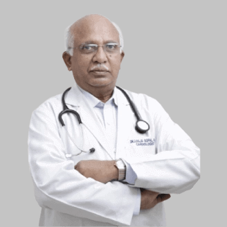
Dr. Alluri Raja Gopala Raju
MBBS, MD, DM, FICA

Dr Arun Srinivas
MBBS, MD, DM (Cardiology), FESC, FACC, FPVI, FCI, FPC
Dr Subhashini Prabhakar
MBBS; MD (Internal Medicine); MNAMS (Neurology)
Dr Sudhir Kumar
MBBS; MD (Internal Medicine); DM (Neurology)
Dr B G Ratnam
MBBS, Mch(Neurosurgery)
Dr. Jairam Chandra Pingle
MBBS; MS (Ortho); FRCS
Dr. K J Reddy
MBBS; MS(PGI); DNB; FRCS(ENG); FRCS(Ed),FRCS (Orth)
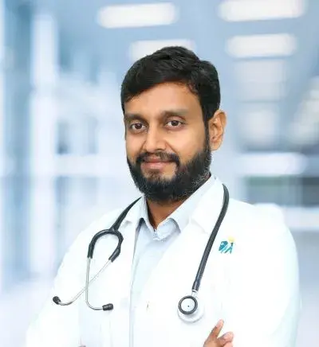
Dr Kiran Varma Uddaraju
MBBS, MS(Orthopaedics)
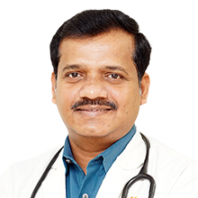
Dr B Ramesh
MBBS, MD
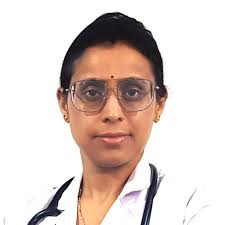
Dr. Sandhya Gurubasappa
MBBS, MD
Dr. Sandhya Gurubasappa
MBBS, MD
Dr. Syed Athar Hussain
MBBS, MD
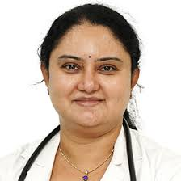
Dr. T. Rajeshwari Reddy
MBBS, MS (Obstetrics & Gynaecology), DES (Germany), FAMS (New Delhi)

Dr. Vindhya Tirumala Reddy
MBBS, DGO, MD, FICOG
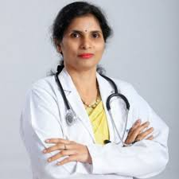
Dr. Neelima Kanth T
MBBS, MS (OBG), FMAS, FSUI
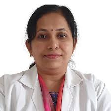
Dr. Sharmila Pendyala
MBBS, MD (Pediatrics)
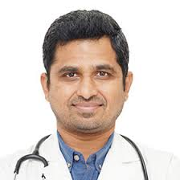
Dr. Vishnuvardhan Reddy
MBBS, DCH, DNB (Pediatrics), MRCPCH
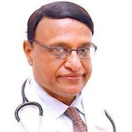
Dr. Koteshwar Rao
MD (Pediatrics), MD (Neonatology)
Dr. Kalpana Bali
MBBS, MD (Pulmonary Medicine)
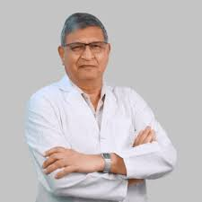
Dr. Pradyut Waghray
MBBS, MD (Chest), FRCP, FCCP
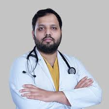
Dr. Sai Praveen Haranath
MBBS, Pulmonary & Critical Care (USA Board Certified)
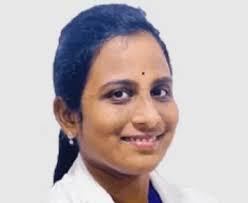
. Dr. Padmaja Lokireddy
MBBS, MD (General Medicine), MRCP (UK), FRCPath